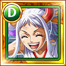

★
★
★
★
★
+
- Personnages soutenus : Personnages de type DEX de classe Ravageur ou Tenace
- Level 5: Lorsque le personnage soutenu utilise son coup special réduisant les degats, rend les cercles TND avantageux pour l'équipe pendant 1 tour et dégats subis par les ennemies 1.25 pendant 1 tour (une fois par quête)
Yamato
Décision amenant à un futur similaire.
Classe du personnage :
Ravageur & Tenace
Statistiques
| LEVELS | HP | ATK | RCV |
|---|---|---|---|
| 1 | 1,731 | 840 | 174 |
| 99 | 3,462 | 1,680 | 263 |
| 150 | 5,193 | 2,223 | 395 |
Capacité de Capitaine
- ATK x 4.5 (x5 environ avec des cercles TND ou WA et HP x 1.3 pour les personnages de type DEX et les personnages des classes RAVAGEUR et TENACE, rend les cercles TND avantageux pour ces personnages et réduit la durée de Désespoir du capitaine et de paralysie de l'équipe de 2 tour
Capacité de Crewmate
- CARAC Change les cercles des personnages de la rangée inférieur en cercles WANO au debut de la quête
- STATS + Stats de base de l'équipe + 60
Spécial
- Réduit la durée de Lien et de Brulure subis par l'équipe de 3 tours, s'il y as des ennemis en état d'augmentation de dégats subis ou s'ils sont immunisés lorsque le coup spécial est lancé, réduit la durée de Liens des cercles subi par l'équipe de 3 tours, change le cercle du personnage en TNDet ceux des personnages adjacent en WA (Et augmente l'ATK du dernier coup suivant porté par des personnage de type DEX ou ravageur ou tenace de 25%) et le reste du temps , dégats subis par tout les ennemis de x 1.75 pendant 1 tour
Tandem
Évolution
→

CAPACITÉS PVP
Coup spécial PVP
Réduit la DEF d'un ennemi dont les HP restants sont élevés Lv.4 (14s), Inflige des dégats équivalennt a 2.5x l'ATK, Inflige aux ennemis de type QCK des dégats équivalent a 2x l'ATK
CoolDown 36s
Capacité de la fête des pirates
Augmente les HP des allIés de type DEX Lv.3, Augmente l'ATK Lv.4, réduit la DEF des ennemis de type QCK Lv.5
Actions principales
→ ATK normal
→ ATK renforcée
→ ATK à pleine puissance
Cibles des actions
Vis les ennemis proches
Résistance
80 % de chances d'éviter "Paralysie", réduit les dégâts reçus de personnages de type QCK de 20 %